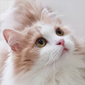
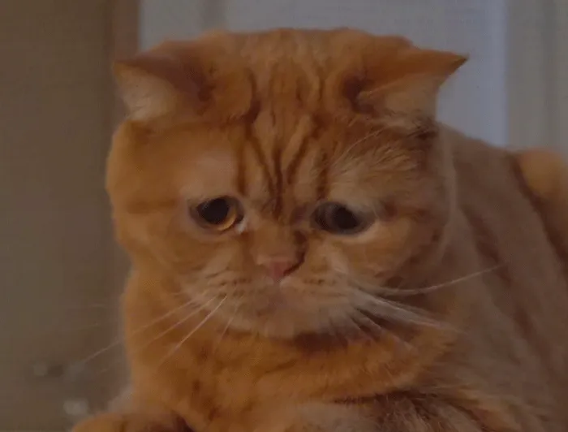

Youtube

CreamHeroes-구독자 385만명
유튜브 메인사진 Name : DD10마리의 고양이가 여러분을 찾아갑니다.
"DD TT MoMo CoCo ChuChu LuLu LaLa NaNa ToTo DoDo"
10마리의 고양이들의 귀여움과 집사의 귀여움을 함께 느낄 수 있는 채널!
고양이를 좋아한다면 한번쯤은 보는 것을 강력 추천하는 채널이다.
보다보면 사실 고양이보다도 집사의 매력에 빠지게 되는데 이정도 덕질이 시작되었다면
크언니의 채널에서 라이브를 즐겨보는 것도 좋을지도...

최애 고양이 MoMo! 귀염뽀짝한 모습을 같이 즐겨보세요!